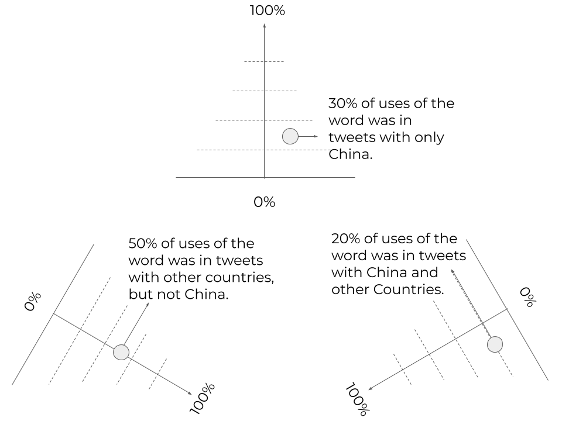

How Chinese state media covered news in the early days of the epidemic
An analysis of 3,222 English-language tweets from the People's Daily
An analysis of 3,222 English-language tweets from the People's Daily
On Dec. 30, a Chinese ophthalmologist. Wen-Liang Li, warned his colleagues about an unknown virus circulating through Wuhan. A few days later, Li was summoned and admonished by the Public Security Bureau for spreading "false comments" on the internet. Within months, that unknown virus -- the coronavirus -- had affected millions. Yet while people in the West can read thousands of uncensored stories about the epidemic, in China, it's a different story. The Chinese government has taken control of the narrative and cracked down on coverage that challenges their story. To understand how the Chinese government has attempted to shape the conversation about COVID-19, I analyzed every English tweet published by the People's Daily, the newspaper of the ruling Communist Party, between Jan. 3 and Mar. 27. During the COVID-19 outbreak, this analysis reveals, the People's Daily avoids associating words like “deaths” or “died” with China. The newspaper also tends to cover a lot more information about other countries than about China, shifting the story away from its shores.
I counted the top 300 words used in tweets between Jan. 3 and March 27 and focused on how a few popular words were used across time to examine the tweets further.
This chart shows how frequently the word “China” was used. The percentage of uses of this word had mostly been high but started to decrease in mid-February.
Tweets mentioning coronavirus increased in mid-January, surging at the beginning of February. Tweets mentioning COVID-19 sharply jumped after the International Committee on Taxonomy of Virus renamed the virus on Feb. 11.
China’s COVID-19 outbreak began in January -- but at first, words tied to the outbreak, such as cases, total, number and deaths were not used often in People’s Daily tweets. It was not until after mid-February, when the epidemic hit other nations, that mentions of these words surged. This led me to my next question: What are the differences between People’s Daily tweets about China and those referencing other countries? Will the most mentioned words be different, if we divide the tweets into different groups?
To examine that, I extracted tweets mentioning one or more country names and divided them into three tweet groups -- tweets mentioning only China, tweets mentioning countries but not China and tweets referencing China and other countries. I visualized the results on a triangle with a tweet group in each corner.
Each circle represents a word from the top 300 words across all tweets. The closer the circle is to one vertex, the more likely the word is to appear in that tweet group.
Each vertex represents 100% of uses of a word in the tweet group while each side represents 0%. 
The light red circles represent tweets in January.
Medium red: tweets in February. Dark red: March.
The size of the circle is proportional to the total mentions of the word.
For example, this circle represents the use of “Wuhan” in January. Since this word was used more frequently in tweets mentioning only China in January, it's closer to the apex.
The two other colored dots represent use of “Wuhan” in February and March.
By connecting the circles representing the same word, we can see the trajectory of the word moving from one position to the others in different months.
Here is an overview of the top 300 words used in the three tweet groups between Jan. 3 to Mar. 27.
Let's take a look at the tweets referencing “confirmed” and “cases.”
In January, they were mentioned no more than 25 times, respectively.
As more other countries reported confirmed cases of COVID-19, the circles representing these two words move toward the tweet group mentioning other countries, but not China. The word "cases" was used 10 times more in March than in January.
Next, let's focus on the trajectories of “died” and “deaths.”
"Deaths" didn't appear in January, while "died" only showed up once in a tweet that mentioned other countries but not China, suggesting that People's Daily didn't use “China” and “deaths” or “died” together in any tweets in January.
But those words showed up in tweets published in February and March, leaning more toward the tweet group containing countries except for China.
Circles representing "total" and "number" have very similar trajectory.
“Total” and “number” appeared in January mostly in tweets mentioning China but weren’t used much.
Starting in February, these two words have been used a lot more in tweets referencing countries other than China.
In March, words that emphasized how China is helping other countries appeared more frequently. They are mostly mentioned in tweets referencing China and other countries together.
Hover over the circles and you will see circles representing the same words being connected.
In the second week of December, according to a study in The Lancet, Wuhan doctors had already found cases suggesting an unknown virus was spreading from one human to another — "The first fatal case, who had continuous exposure to the market, was admitted to hospital because of a 7-day history of fever, cough, and dyspnoea. 5 days after illness onset, his wife, a 53-year-old woman who had no known history of exposure to the market, also presented with pneumonia and was hospitalized in the isolation ward." However, it was not until Jan. 20 that the Chinese government finally admitted human-to-human transmission of the coronavirus. One study published recently pointed out that if the Chinese government had started the non-pharmaceutical interventions one to three weeks earlier, the confirmed cases of COVID-19 could be reduced by more than one-third. As coronavirus spread in China slows down, Chinese official media have started to promote a narrative that the virus did not originate in Wuhan and that China's strategic response to COVID-19 is the model that every country should follow. But besides acknowledging the Chinese government's efforts to mitigate the outbreak in China, we should also pay attention to its early missteps and how its official media sought to influence the conversation about COVID-19.
Source: China Digital Times. I only used the data between Jan. 1 and Mar. 22.
Collecting I used a Python library, Tweepy, to scrape tweets from People's Daily's English account. Due to the limited number of API calls one can make through a free developer account, I only collected 3,222 tweets between Jan. 3 and Mar. 27. Cleaning Using Python, I removed punctuations, usernames and URLs, tokenized each sentence into a single word, and removed stop words like the, a, is, am, are, etc. By adding up the number of uses of each word, I got the top words across all tweets. Dividing tweets into groups I created a list of country names to extract tweets referencing one or more countries. The list, focusing on countries that have been struck by the epidemic severely or mentioned frequently by People's Daily, includes China, Australia, Iraq, England, UK (and United Kingdom), US (and United States), Italy, Korea, Germany, Iran, France, Finland, Portugal, Czech, Brazil, Spain, Belgium, Malaysia, Pakistan, Philippine, Taiwan and Czech. Since many tweets mention Hubei or Wuhan solely, I included these region names as well. I divided these tweets into three groups -- tweets referencing only China (or its provinces), tweets referencing countries other than China and tweets with China and one or more countries. To compare the number of uses of words in three groups at the same time, I decided to use a triangle plot. The percentage of a word is 100% in each corner of the triangle and 0% at the line opposite it. It decreases linearly with increasing distance from the vertex. Calculating the normalized percentage of each word I calculated the monthly percentage of uses of the top 300 words in each tweet group, normalizing the numbers based on the total number of words used by each tweet group. For example, in January, "confirmed" showed up 18 times in tweets referencing only China, 4 times in tweets mentioning countries other than China and 2 times in tweets with China and one or more countries. Its unnormalized percentage in the tweet group referencing only China is 75% (18 / (18+4+2)). In January, the total word counts in tweet group referencing only China is 5113, that in tweet group mentioning countries other than China is 865 and that in tweet group with China and one or more countries is 314. The way I calculated the normalized percentage of the same word in tweet group referencing only China is: 18*865*314 / (18*865*314 + 4*5113*314 + 2*865*5113) = 24.3% The normalized percentage of "confirmed" in tweet group mentioning countries other than China is 31.8% and that in tweet group with China and one or more countries 43.9%.